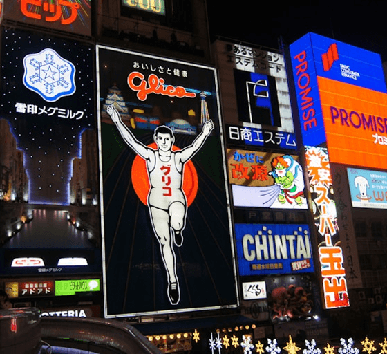

大阪
大阪，一座融合傳統與現代的城市，擁有豐富的歷史文化、熱鬧的購物街區與世界知名的美食天堂。從氣派的大阪城到霓虹閃爍的道頓堀，每一處都充滿驚喜。無論是第一次造訪，還是再次回味，大阪總能用它的熱情與魅力，讓你留下難忘回憶。




大阪，一座融合傳統與現代的城市，擁有豐富的歷史文化、熱鬧的購物街區與世界知名的美食天堂。從氣派的大阪城到霓虹閃爍的道頓堀，每一處都充滿驚喜。無論是第一次造訪，還是再次回味，大阪總能用它的熱情與魅力，讓你留下難忘回憶。